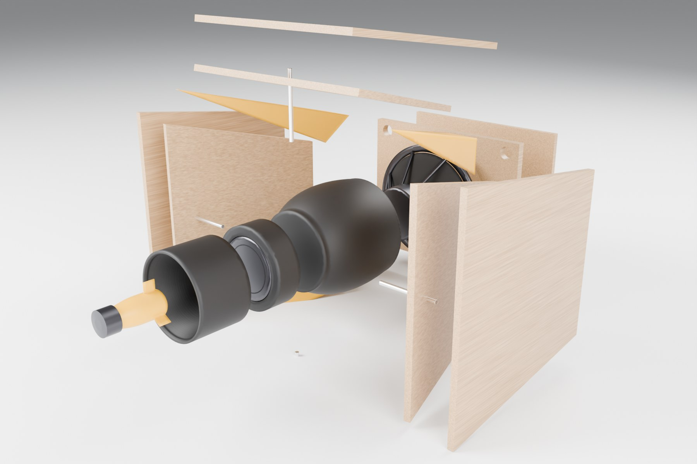

Build
Flat birch-ply panels and printed round parts. Everything here is generated from the same design file as the simulations.



Bill of materials
| Item | Qty | Notes |
|---|---|---|
| Eminence DELTA-15LFA | 1 | Kick, rear-mounted, motor forward |
| Beyma 6MCF200Nd | 1 | Mid, 6.5 inch |
| 18 Sound ND1030 | 1 | HF, $150 each |
| Birch ply 18 mm | About 3 m² | |
| Birch ply 25 mm | 1 baffle | |
| Birch ply 12 mm | About 0.3 m² | Corner filler faces and ribs |
| Aluminium tube, 12 mm OD | 4 | Centre body supports; the top one carries the mid and HF cables |
| PETG or ASA filament | About 3 to 4 kg | Printed parts below |
| M6 inserts and bolts | 8 | 15 inch, from the chamber side |
| M4 heat-set inserts and screws | 12 | Mid driver, HF unit, part joints |
| Speaker cable 2 x 1.0 mm² | About 3 m | |
| Terminal cup | 1 | One pair per amplifier channel |
| Polyester wadding | 0.5 m² | Chamber |
| Closed-cell foam blocks | 1 litres | Fill the chamber down from 36 to 35 litres |
| 3-way DSP and 3 amplifier channels | per box | LR4, delay, gain, shelf, limiter |
Cut list
| Part | Qty | Size (mm) | Ply (mm) | Notes |
|---|---|---|---|---|
| Sides | 2 | 588 long, 479 tall at the back, 636 at the front | 18 | side.dxf |
| Top and bottom (shell) | 2 | 560 wide, angled 7.8 deg | 18 | Fit between the sides |
| Back | 1 | 560 x 443 | 18 | Terminal cup |
| Baffle | 1 | 560 x 455 | 25 | baffle.dxf: cutout and four 40 mm chamber ports |
| Horn side walls | 2 | Trapezoid 360 to 600, 510 long | 18 | flare 11.3 deg |
| Horn top and bottom walls | 2 | Trapezoid 396 to 596, 514 long | 18 | flare 13.5 deg |
| Corner filler faces | 4 | Triangle, base 149 | 12 | Three ribs each |
DXF: side, baffle, horn side wall, horn top wall.
Printed parts
Each part is already cut into sections and quarters that fit a 250 mm bed, in cad/print/.
| Part | Print files | Est. mass (kg) |
|---|---|---|
| One-piece centre body | centre_body-1-q1.stl, centre_body-1-q2.stl, centre_body-1-q3.stl, centre_body-1-q4.stl, centre_body-2-q1.stl, centre_body-2-q2.stl, centre_body-2-q3.stl, centre_body-2-q4.stl | 4.82 |
| Mid horn | mid_horn-1.stl | 1.92 |
| Mid driver sleeve | mid_sleeve-1.stl | 1.66 |
| Phase plug and HF horn | phase_plug-1.stl | 0.32 |
Before printing, measure: the 15 inch cone profile and motor (the centre body's rear face follows the cone at Xmax plus 3 mm and clears the motor by 3 mm), the mid cone profile (lead-in at 1.5 mm), and the HF unit's body cylinder (the plug is bored to 66 mm).
Assembly
- Shell. Glue the sides to the angled top and bottom and the back. Fit the baffle 45 mm in front of the back. Seal every joint.
- Kick driver. Pass it motor-first through the baffle from behind; flange on the back face, on gasket, eight M6 bolts.
- Horn walls. Glue in the four internal horn walls and the corner fillers. The space outside them is the sealed chamber, joined to the box behind the baffle through the four baffle ports. Add foam blocks to bring it to 35 litres.
- Centre body. Glue the printed sections into one piece. Its rear face sits 8 mm in front of the 15 inch cone and does not touch the motor; it hangs on the rods, with a foam ring at the motor.
- Mid and HF. Fit the HF unit into the phase plug, the plug's vanes into the mid horn throat, the mid driver to the back of the mid horn, then the sleeve and the centre body.
- Supports. Four 12 mm tubes through the horn walls into the can; cables out through the top tube, through the chamber, to the terminal cup.
- DSP. Start from the settings on the simulation page, then measure each section.
- Stacking. Boxes sit splayed at 15.7 degrees, angled panel on angled panel; fly or strap them as a column.